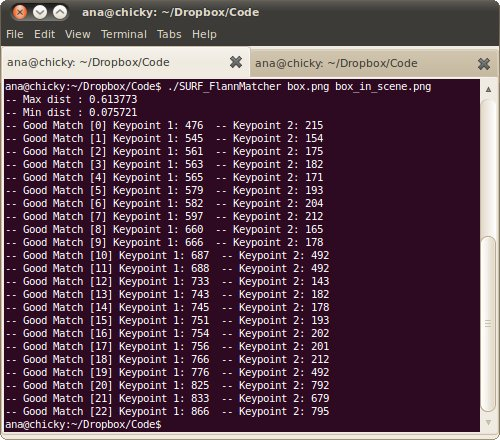

Feature Matching with FLANN
Goal
In this tutorial you will learn how to:
- Use the cv::FlannBasedMatcher interface in order to perform a quick and efficient matching by using the Clustering and Search in Multi-Dimensional Spaces module
Theory
Code
This tutorial code’s is shown lines below.
/* * @file SURF_FlannMatcher * @brief SURF detector + descriptor + FLANN Matcher * @author A. Huaman */ #include <stdio.h> #include <iostream> #include <stdio.h> #include <iostream> #include "opencv2/core.hpp" #include "opencv2/features2d.hpp" #include "opencv2/imgcodecs.hpp" #include "opencv2/highgui.hpp" #include "opencv2/xfeatures2d.hpp" using namespace std; using namespace cv; using namespace cv::xfeatures2d; void readme(); /* * @function main * @brief Main function */ int main( int argc, char** argv ) { if( argc != 3 ) { readme(); return -1; } Mat img_1 = imread( argv[1], IMREAD_GRAYSCALE ); Mat img_2 = imread( argv[2], IMREAD_GRAYSCALE ); if( !img_1.data || !img_2.data ) { std::cout<< " --(!) Error reading images " << std::endl; return -1; } //-- Step 1: Detect the keypoints using SURF Detector, compute the descriptors int minHessian = 400; Ptr<SURF> detector = SURF::create(); detector->setHessianThreshold(minHessian); std::vector<KeyPoint> keypoints_1, keypoints_2; Mat descriptors_1, descriptors_2; detector->detectAndCompute( img_1, Mat(), keypoints_1, descriptors_1 ); detector->detectAndCompute( img_2, Mat(), keypoints_2, descriptors_2 ); //-- Step 2: Matching descriptor vectors using FLANN matcher FlannBasedMatcher matcher; std::vector< DMatch > matches; matcher.match( descriptors_1, descriptors_2, matches ); double max_dist = 0; double min_dist = 100; //-- Quick calculation of max and min distances between keypoints for( int i = 0; i < descriptors_1.rows; i++ ) { double dist = matches[i].distance; if( dist < min_dist ) min_dist = dist; if( dist > max_dist ) max_dist = dist; } printf("-- Max dist : %f \n", max_dist ); printf("-- Min dist : %f \n", min_dist ); //-- Draw only "good" matches (i.e. whose distance is less than 2*min_dist, //-- or a small arbitary value ( 0.02 ) in the event that min_dist is very //-- small) //-- PS.- radiusMatch can also be used here. std::vector< DMatch > good_matches; for( int i = 0; i < descriptors_1.rows; i++ ) { if( matches[i].distance <= max(2*min_dist, 0.02) ) { good_matches.push_back( matches[i]); } } //-- Draw only "good" matches Mat img_matches; drawMatches( img_1, keypoints_1, img_2, keypoints_2, good_matches, img_matches, Scalar::all(-1), Scalar::all(-1), vector<char>(), DrawMatchesFlags::NOT_DRAW_SINGLE_POINTS ); //-- Show detected matches imshow( "Good Matches", img_matches ); for( int i = 0; i < (int)good_matches.size(); i++ ) { printf( "-- Good Match [%d] Keypoint 1: %d -- Keypoint 2: %d \n", i, good_matches[i].queryIdx, good_matches[i].trainIdx ); } waitKey(0); return 0; } /* * @function readme */ void readme() { std::cout << " Usage: ./SURF_FlannMatcher <img1> <img2>" << std::endl; }
Explanation
Result
Here is the result of the feature detection applied to the first image:

Additionally, we get as console output the keypoints filtered:
